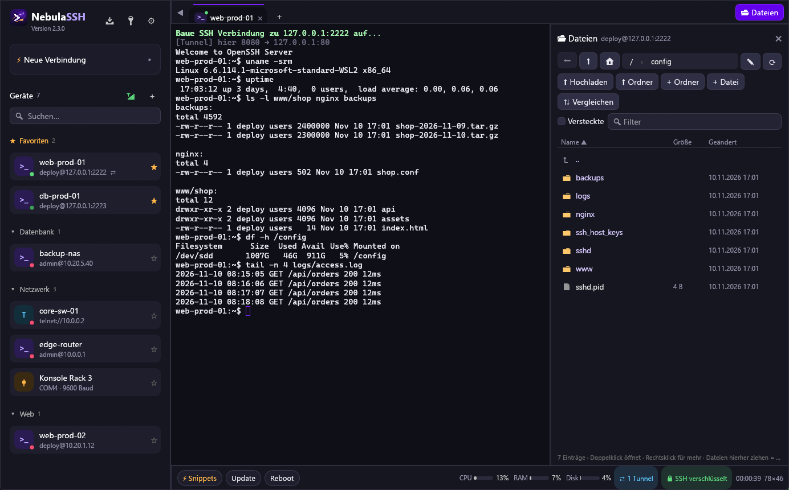
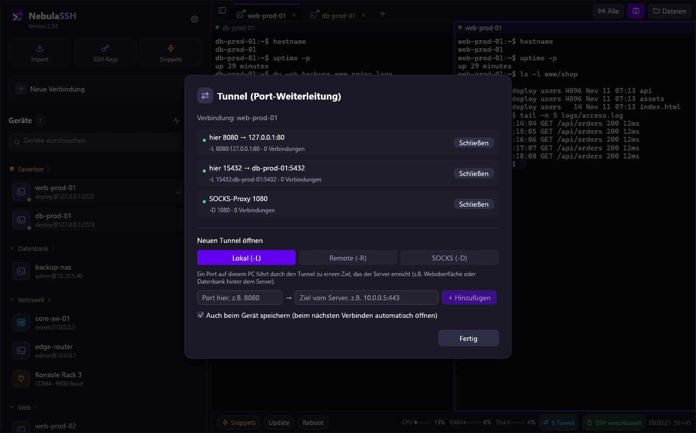
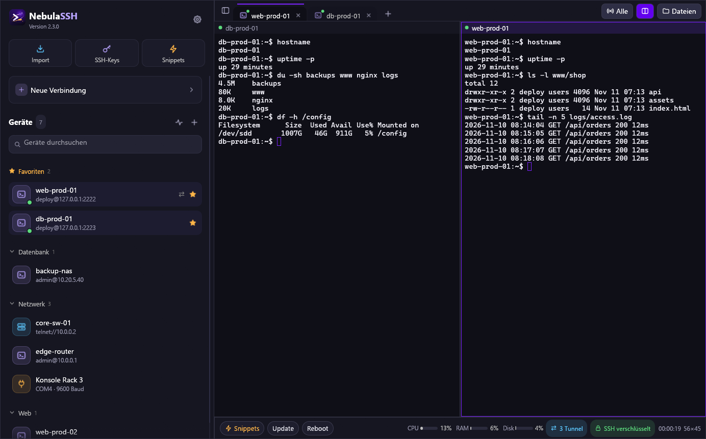
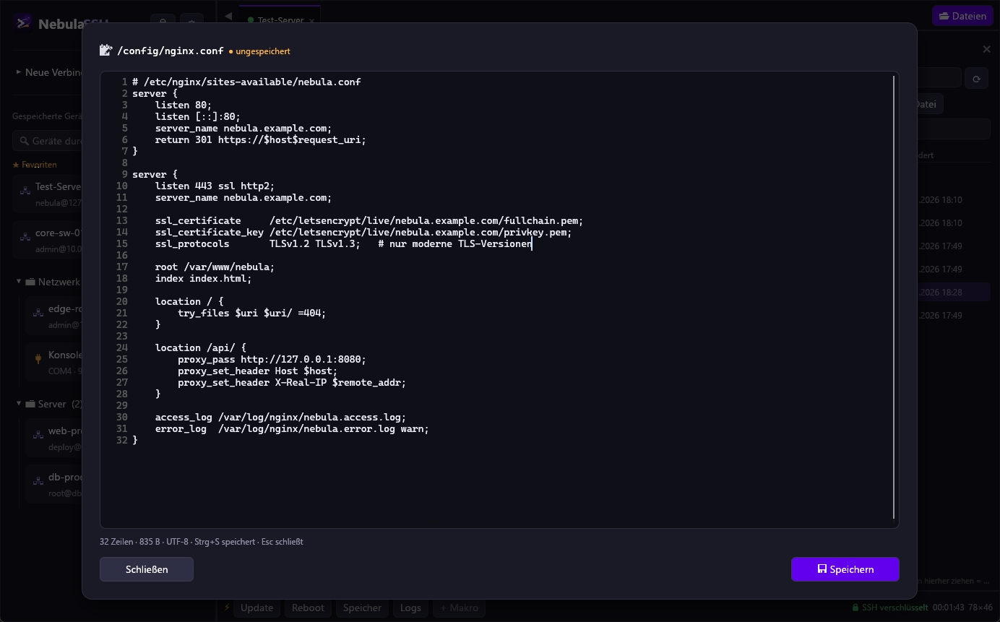
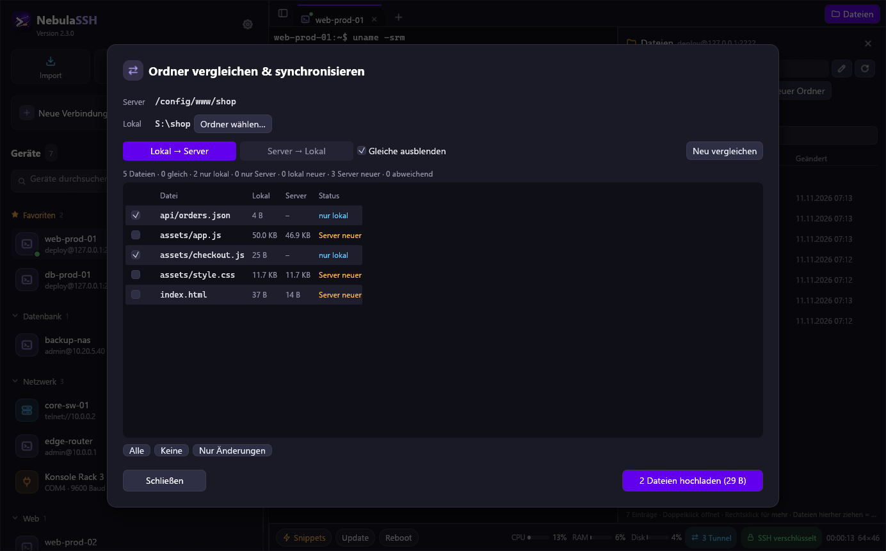
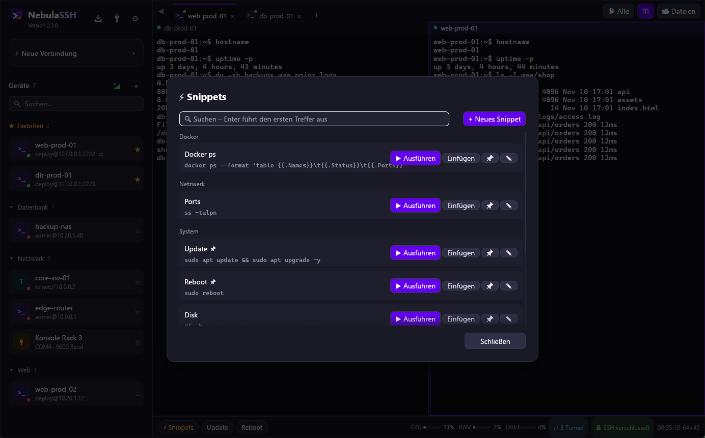
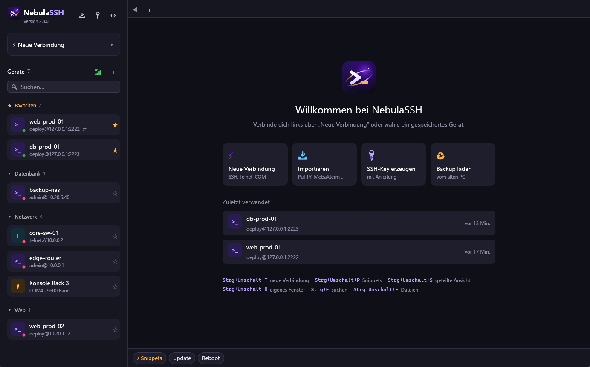
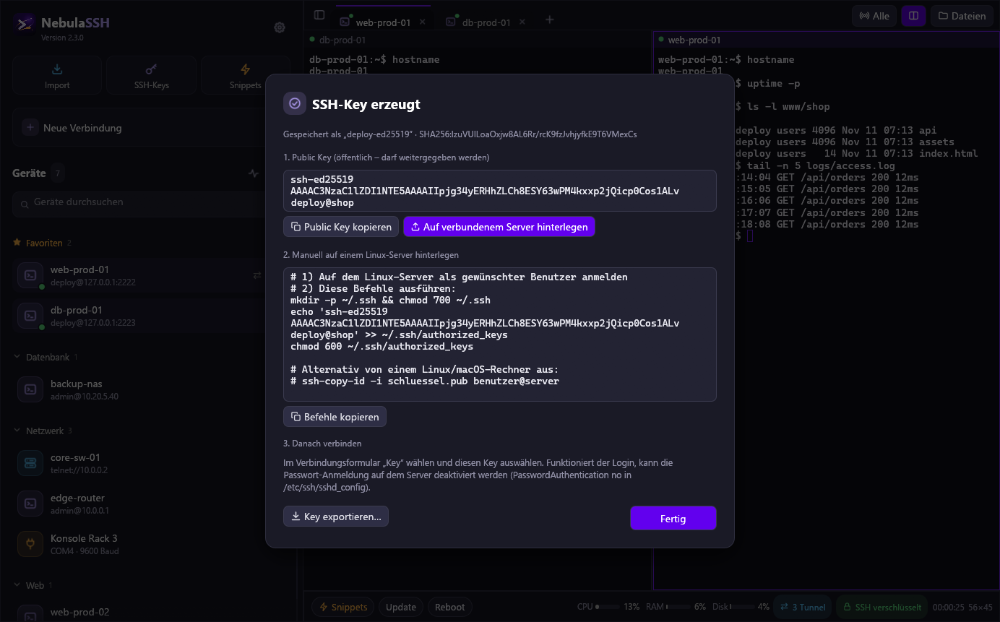
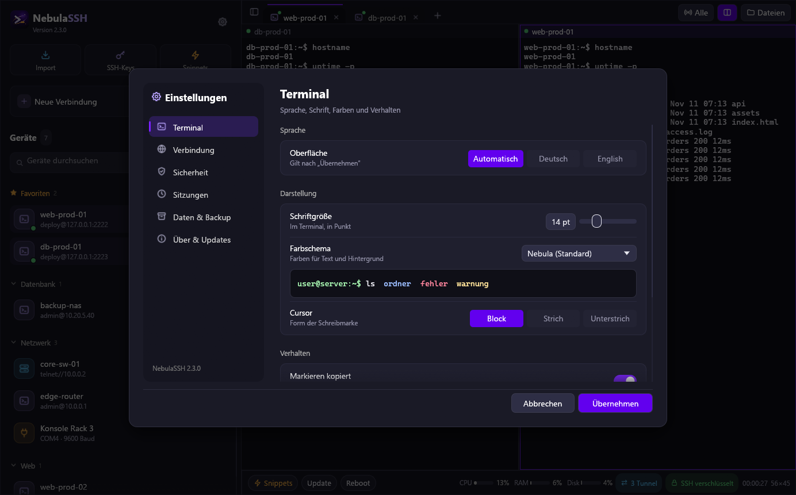
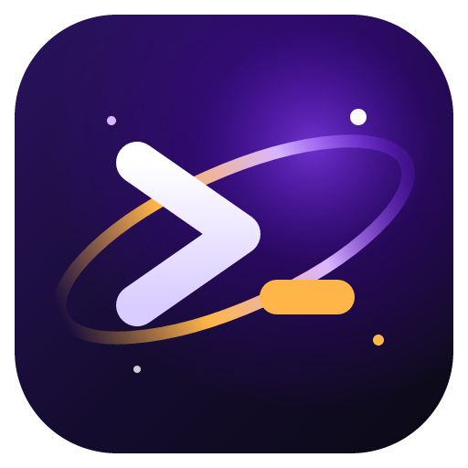

>_
Linux servers
deploy@web-prod-01
Terminal, SFTP browser and editor side by side. CPU, RAM and disk usage sit in the status bar.
SSHSFTPX11
NebulaSSH connects you to servers, switches and serial consoles over SSH, SFTP, Telnet or COM port. A native Windows client written entirely in Rust, with no browser running underneath.

Anything with a console lands in the same device list, with groups, favourites and a dot that shows whether it is reachable right now.
Terminal, SFTP browser and editor side by side. CPU, RAM and disk usage sit in the status bar.
Reach the internal network through a jump host, and databases and web consoles through tunnels.
Keyboard-interactive login, legacy algorithms as a fallback, and Telnet for devices that speak nothing else.
Plug in the USB console cable, pick the port and baud rate, done – with custom profiles per device.
Real screenshots of version 2.3, taken against two test servers – nothing mocked up. The app is shown in German; switch it to English in the settings.

Local, remote or SOCKS port forwarding – saved per device or opened during a session.

Up to four terminals side by side. Drag a tab out of the bar into its own window.

Double-click opens a file in the editor, Ctrl+S saves it back to the server.

Compare a local folder with the server and transfer only new and changed files. Nothing gets deleted.

Frequent commands with placeholders, sorted into groups and searchable.

Groups, favourites, recently used – and a dot shows what is reachable.

Generate Ed25519, RSA or ECDSA keys and install them on the connected server in one click.

Colour scheme, font, cursor, language and behaviour – with a live preview.
The biggest update since the move to Rust. Existing installations are offered it on their next start.
The things you only miss once they are gone.
New servers show their fingerprint for you to confirm. If it changes later, NebulaSSH warns you before any password is sent.
Devices and keys are stored AES-256 encrypted on disk; the key lives in the Windows Credential Manager.
Optional start-up password (Argon2id) and automatic lock after inactivity – handy on shared PCs.
New versions are detected at start-up and only installed if signature and checksum match.
Export everything to a password-protected .nebula file and restore it on your new PC.
Copied passwords are cleared from the clipboard automatically after 30 seconds.
Send one command to all connected tabs at once – for several switches in one go.
Modern ciphers first, legacy algorithms as a fallback you can switch off.
Ctrl+F searches the output. Selecting copies, right-click pastes.
Version 1 ran on Go with an embedded browser interface. Since 2.1, NebulaSSH is written entirely in Rust: terminal, interface and SSH run in a single, lean process.
Your devices from version 1 carry over – the encrypted files are compatible.
PuTTY, WinSCP and MobaXterm each cover part of the job. NebulaSSH brings terminal, files, tunnels and serial console together in one free app – and imports your existing sessions.
| Feature | NebulaSSH | PuTTY | MobaXterm |
|---|---|---|---|
| SSH terminal with tabs | ✓ | – | ✓ |
| SFTP browser with editor | ✓ | psftp only (command line) | ✓ |
| Sync local folders with the server | ✓ | – | – |
| Save tunnels (-L, -R, SOCKS) per device | ✓ | ✓ | ✓ |
| Jump host (ProxyJump) | ✓ | – | ✓ |
| Telnet and serial console | ✓ | ✓ | ✓ |
| Up to four terminals side by side | ✓ | – | ✓ |
| Import from PuTTY and MobaXterm | ✓ | – | PuTTY only |
| No limit on sessions or tunnels | ✓ | ✓ | Home Edition limited |
| Encrypted storage with app lock | ✓ | – | ✓ |
File transfer like WinSCP is built in: upload, download, edit straight on the server and sync folders.
What people switching from PuTTY, MobaXterm and WinSCP want to know first.
Yes. NebulaSSH imports your saved PuTTY sessions and adds what PuTTY is missing: tabs, an SFTP file browser with a built-in editor, saved tunnels, jump hosts, snippets and a split view with up to four terminals. Telnet and serial consoles work just like in PuTTY.
NebulaSSH focuses on SSH, SFTP, Telnet and serial consoles and is free without limits: there is no cap on sessions or tunnels. It is written in Rust and uses around 150 MB of RAM when idle. MobaXterm sessions can be imported directly.
Yes. NebulaSSH is completely free, with no account, no ads and no paid edition. The source code is on GitHub.
No. NebulaSSH is a native Windows desktop app that runs on your own PC. There is no cloud service and no account: devices, passwords and keys stay on your computer, encrypted with AES-256.
Yes. The importer reads saved sessions from PuTTY, MobaXterm and the OpenSSH config file ~/.ssh/config and adds them as devices in NebulaSSH.
Yes. NebulaSSH-portable.exe is a single file for a USB stick. Devices and settings are stored in the same folder as the EXE.
Windows 10 and Windows 11, 64-bit. No WebView2, .NET or other runtime is required.
Yes. The built-in SFTP browser uploads and downloads files and folders, opens files in the editor and saves them straight back to the server with Ctrl+S. Local folders can be compared and synced with the server.
Yes. Besides SSH, NebulaSSH supports Telnet for older network gear and serial connections over COM ports with any baud rate. Broadcast sends one command to all open tabs at once.

All downloads come straight from the GitHub releases and are always the latest version.
Recommended. Installs to C:\Program Files\NebulaSSH with a Start menu entry and uninstall via “Apps & features”.
A single EXE for your USB stick. Devices and settings are stored in the same folder.
NebulaSSH-portable.exe · 12.9 MB Download portableWindows 10 or 11, 64-bit · All versions & changes · Checksums